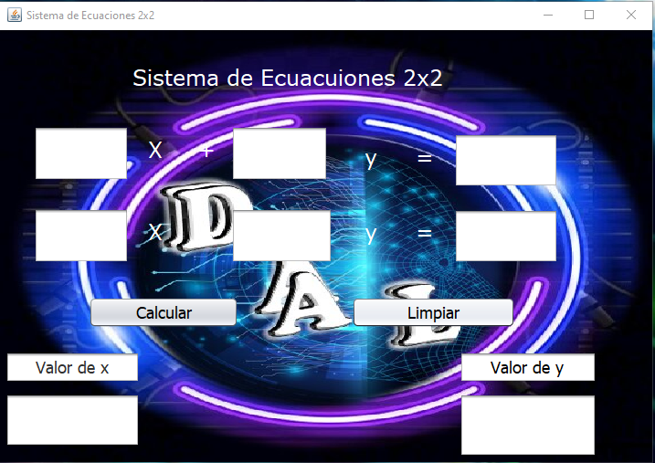
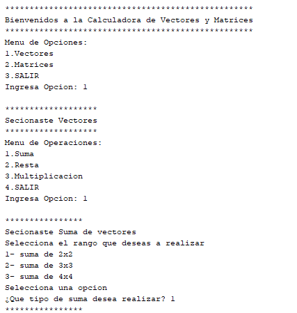
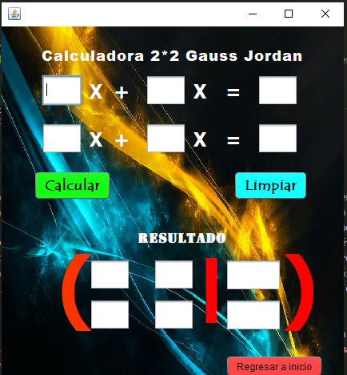
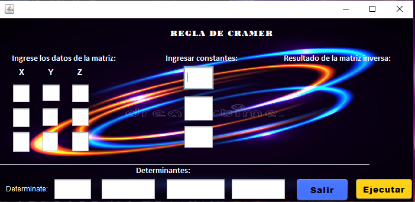

Con un equipo de trabajo realizamos 4 programas en el area de Algebra Lineal
durante el tiempo que estube trabajando con dicho grupo logre adquirir
conocimientos nuevos al igual que logre conocer la forma de programar de
cada compañera, asi mismo les enseñe lo que yo conocia en programacion
asi mismo ellas me enseñaron lo que sabian en programacion y con los
conocimientos de todas logramos realizar trabajos de alta calidad
el primer trabajo fue:
El sistema de ecuaciones: En el programa de ecuación de 2x2 se llevo a
cabo a través del lenguaje JAVA ya que a las programadoras se les facilito
el uso del lenguaje de programación JAVA ya que tenían conocimiento avanzado en el leguaje
a través de eso se realizo una interfaz gráfica con 10 botones que se deriva (x1,x2,y1,y2,z1,z2, calcular,
limpiar, respuesta de “x” y respuesta de “y”).Al momento de programar hubieron algunos errores que nos marcaba
el lenguaje de JAVA, pero lo solucionamos empleando una lógica para cada error así mismo se le añadió un logo
elaborado por una de nuestras compañeras por ultimo realizamos todos los procesos para que funcionara nuestra
calculadora

El Segundo trabajo fue: verctores y Matrices:En el programa de la calculadora se impletoto 890 lineas de codigo ya que
se tuvo que declarar variables como 50 aproximadamente esta calculadora contaba con un obejetivo ya que tenia que tener
los soguientes datos: en los vectores deberia de ir las operaciones las cuales son: Suma, Resta y multiplicacion.
en las matrices deberia de ir las operaciones las cuales son: Suma, Resta y multiplicacion.
ya que en algunas operaciones se implemento 3x3, 2x2, 3x4 y 4x4 para este proyecto se implemento Array
por cada operacion para poder tener un mejor control para ello se utilizo el ciclo FOR para poder
ahorrarnos lineas de codigo eso fue lo mejor conveniente para poder programar el proyecto .
cada compañero importo ideas para dicha calculadora asi poder tener un resultado efectivo.

El tercer trabajo fue: Metodo de Gauss Jordan, En el programa de Gauss Jordan se llevo a cabo a través del
lenguaje JAVA ya que a las programadoras se les facilito el uso del lenguaje de programación JAVA ya que tenían
conocimiento avanzado en dicho leguaje a través de eso se realizo una interfaz gráfica con 3 botones los cuales
pertenecian al menu principal los cuales son Metodo de 2x2, Metodom de 3x3 y programadoras los cuales nos dirijian a
diferente sitio este prigrama se elaboro en el tiempo de 3 semanas trabajando 3 dias a la semana y trabajando 1 Hora por
por dia, asi mismo el programa marcaba algunos errores los cuales se resolvieron en equipo, asi mismo se trabajo el diseño
y presentacion de la aplicacion.

El cuarto trabajo fue: El metodo de Cramel En el programa de Cramer se llevo a cabo a través del lenguaje JAVA con interfaz grafica
en el programa de la calculadora se implemento 643 líneas de código yaque se tuvo que declarar variables como 20 aproximadamente esta
calculadora cuenta con un objetivos ya que tenia que tener los siguientes datos:Menú: Calculadora de Método Cramer Para eso se debió
de presentar una mayor atención para realizar cada procedimiento para encontrar las determinantes de X,Y,Z lleva tiempo para poder
hacerlo pero . Poder tener una concentración máxima además de eso se tuvo que declarar variables para poder hacer el proceso del los
resultados. Y por ultimo realizar un interfaz amigable para el usuario
